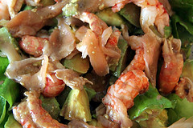
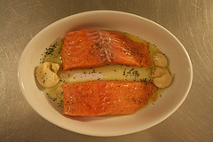
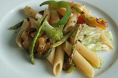
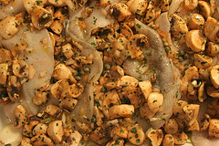

Post o postu
Toliki mi je smor bio za vreme posta u Srbiji stalno slušati, uglavnom žene, kako kukaju o tome kako ne znaju šta će da spremaju (na stranu što takve priče neminovno skreću pažnju u potpuno nebitnom smeru) da mi ovih par godina pečalbe dodje kao pravi odmor.
Ajde da se pozabavimo pitanjem posne hrane, kako je spremati, ima li nekih opštih mesta koji bi pripremu olakšali? Pre svega, kada je hrana u pitanju, post treba shvatiti kao poziv na iskuliravanje (u kvantitativnom smislu) a ne kao vreme kada se klopa posna hrana (u neograničenim količinama). Ako krenemo odatle, izvesno je da će nakon nekoliko nedelja vaš režim ishrane prilagodjeniji vašim stvarnim potrebama. Naravno, treba voditi računa da se unese sve što je telu potrebno da bi neometano funkcionisalo. Tu pre svega mislim na proteine, pošto je vrlo verovatno da ćete ga bombardovati ugljenim hidratima. Osim ribe i plodova mora (ukoliko su deo vaše ishrane) kao mogućnost (i to dobra) se javlja soja i razni proizvodi od soje, kao i pečurke. Obavezno probajte šnicle od soje (pre pečenja ih obarite kratko u vodi sa belim lukom)!
Ako ćemo pravo, post jeste odlična prilika da se jelovnik obogati nekim namirnicama koje nisu na listi onih koje redovno upotrebljavate (a trebale bi da budu). Da li je post i neophodno zdrav? Ne, naravno. Sve zavisi od toga da li za vreme posta jedete više hleba/peciva od belog brašna (što je često slučaj - logika sitog stomaka) ili priliku koristite da povećate unos svežeg povrća, voća i integralnih žitarica. Unosom praznih kalorija, može se desiti da nakon posta vaga pokaže porast težine, što, realno govoreći može delovati frustrirajuće. Ipak, uz malo kontrole, post upućuje na zdrav način ishrane (života). Povećan unos svežih namirnica, izbacivanje loših masti i povećana konzumacija ribe, posebno one bogate Omega3 masnim kiselinama, prijaće telu i umu.
Salate. Iskoristite priliku, vežbajte kreativnost. U salatu može da udje zaista svašta: kombinujte svežinu zelene salate sa punoćom ukusa dimljene ribe; grilovano povrće funkcioniše odlično u pasta salati; orah tu i tamo radi čuda; mahunarke su fenomenalna hrana i slažu se sjajno sa tunjevinom; tofu može zameniti sir u salati sa pečenim paprikama, paradajizom, lukom... kombinacija je bezbroj. Sosić za salatu prilika je da se pored ukusa poboljša i krvna slika: upotreba hladno cedjenog maslinovog ulja dovešće do odčepljenja skidanjem masnih naslaga sa zidova krvnih sudova. Pomešajte maslinovo ulje sa vinskim ili jabukovim sirćetom (može i sok od limuna), dodajte malo morske soli, peršuna, bosiljka, origana, majčine dušice po želji/ukusu.
Ograničavajući faktori mogu biti vreme, novac, dostupnost namirnica, nedostatak ideja... Ipak, ukoliko se dobro organizujete, svi ovi problemi se lako prevazidju: videćete da ovakav način ishrane ne opterećuje budžet; telo će vam biti lakše, a osećaćete se svežije i energičnije.
Nakon nekoliko nedelja ovakvog, ipak specifičnog načina ishrane, potrebno je oprezno preći na "normalnu" ishranu - prejedanje za Božić/Uskrs može imati veoma neprijatne posledice, zato, oprezno sa čvarcima (barem par prvih dana). Ukoliko uspete da neke od ovih zdravih principa usvojite za stalno korist će biti dugotrajna; u svakom slučaju nije loše povesti računa o tome šta se unosi u organizam, ali ovo ne znači da treba da budete opsednuti hranom, na protiv, povremeno preskakanje užine ili večere neće vas ubiti - sva je prilika da će vam čak i koristiti.
Komentari
I da, ovakav naslov ne bi mogao dati na the VIP blogu: tamo bi moralo biti 'blog o postu'
La Lara | 28.12.06 10:35
Kiko, bravo za post! Sta je ovo na poslednjopj slici, neka pita? LaLara, komentar br. 2 - hihihi!
 yello | 28.12.06 13:49
yello | 28.12.06 13:49
 kiko | 28.12.06 14:12
kiko | 28.12.06 14:12
SanFeisty | 28.12.06 17:30
kiko | 28.12.06 18:25
SanFeisty | 29.12.06 05:44
 RSS feed
RSS feed
Ovo sto si uslikao, kao i nazivi jela izgledaju fenomenalno, jos da napises i sta je sta tacno, pa mozda i ja pocnem da postim
La Lara | 28.12.06 10:12